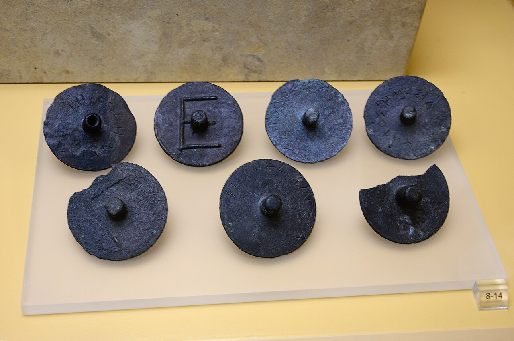

Two ballots.
One unseen vote.
One axle is pierced. The other is solid.
Cover the ends, make your choice,
then let the court see the count.
Constitution of the Athenians, 68–69
Late fourth century BCE; conventionally attributed to Aristotle.
Cast the last ballot.
Ten jurors in a modern training panel. Nine invented votes are already in the urns.
Your pair
Juror 10 of 10Receive one of each, in plain view of both litigants.
Try issuing a faulty pair
One action deposits both ballots here. The text describes the two destinations separately.
Receive a valid pair, choose the solid ballot, and complete the panel.
Inspect the sourceOpen an urn. Read the count.
9 of 10 have castThe count is still closed.
The exercise waits until every training juror has cast.
Board, urn shapes, and ten-person panel are modern teaching drawings. Ancient courts had hundreds of jurors; ten is not a historical panel size.
Does the correct total prove an honest count?
A modern counting experiment
After opening bronze, insert an extra pierced ballot. Then restore the original and replace one solid ballot with a pierced one. Which change can a total detect?
Open the bronze count to try this experiment.
These deliberate interventions are new exercises, not actions prescribed by the ancient text. A matching total alone cannot establish the history of the ballots. This experiment does not evaluate every historical safeguard.
Read the rehearsal sequence
What can the count reveal?
Back to the ballotsThe grip hides the ends during casting. A published total can still constrain a choice. Mark what an observer is assumed to know, then try to make that juror’s choice differ between two arrangements with the same evidence.
These are explicit assumptions in a modern reasoning model. The labeled jurors are teaching devices; ancient ballots do not carry these identities. Try using fewer known choices after all nine.
This is a deduction within a faithful ten-vote model, not a reconstruction of surveillance in an ancient court. The altered counting exercises break that model's premise; restore the original bronze count before using it.
The procedure, word by word.
Back to the ballotsClose English
Loading the printed witness…
This page at Internet Archive. Kenyon’s edition first published in 1920; the scanned imprint lists reprints through 1958. Brackets and critical notes remain visible. The excerpt is a transcription of this print, with normalized punctuation.
Edition and attribution
The source is Aristotelis Atheniensium Respublica, edited by F. G. Kenyon, Oxford, first published in 1920, printed pages LXVII–LXVIII, scanned by Internet Archive from the University of Connecticut Libraries copy. The scanned copy’s imprint lists reprints through 1958; select Imprint to inspect it. The English and phrase notes are new. Square brackets in the selected Greek preserve the editor’s supplies or bracketed text. The retained Perseus transcription, CC BY-SA 4.0, is an independent comparison with some different readings; it is not the exact text transcribed here.

A difference you can hide between two fingers.
The procedure is not only an abstraction. Surviving bronze ballots have projecting axles: some pierced, some solid. Compare their ends with the drawings above.
The Canellopoulos Museum’s fourth-century ballot, collection Χ 600, carries ΨΗΦΟΣ ΔΗΜΟΣΙΑ, “public ballot.” That inscription identifies an official ballot; it does not reveal a juror’s choice.
The three moments are different: the pair is visible when issued; the choice is concealed when cast; the aggregate count becomes visible afterwards.
Leave an explanation.
Why can a tie acquit? Why can the unused urn mislead? What would the total alone fail to establish? Cite the words that support your answer.
Work is kept in this browser when storage is available.
Carry the experiment away.
The illustrated record embeds both complete printed pages, the museum photograph, the Greek, notes, and your rehearsal. It opens without a connection and prints to PDF.
Files stay on your device. A shared link includes the private choices and explanation.
The software checks the procedure and count. It preserves your prose without grading it.
A procedure, within its boundaries.
What comes from the text
One pierced and one solid bronze ballot per juror; the public inspection of that pair; concealed ends during casting; bronze for the effective vote and wood for the unused one; a visible counting board; more votes wins, and equality favors the defendant. Those rules belong to this late fourth-century account.
The work’s attribution to Aristotle is conventional; its individual authorship is debated. The app does not reconstruct the courts of every period, the trial of Socrates, or ostracism. It supplies no historical dispute to decide.
What this workshop adds
A ten-person panel, invented earlier votes, simplified simultaneous deposits, isolated observer views, pinning, undo, and counting interventions. The urns and grip are schematic. No protection against every sight line or side channel is claimed.
The fragment describes a narrow opening as a precaution. A valid total is only one check: replacing a ballot can leave it unchanged. The app is a learning record, not an election system. It omits juror selection, pay-tokens, evidence challenges, penalty assessment and the rest of the legal system.
Jury service was restricted by citizenship, sex, age and status. This is a study of an unequal ancient institution, not a claim of equal participation.